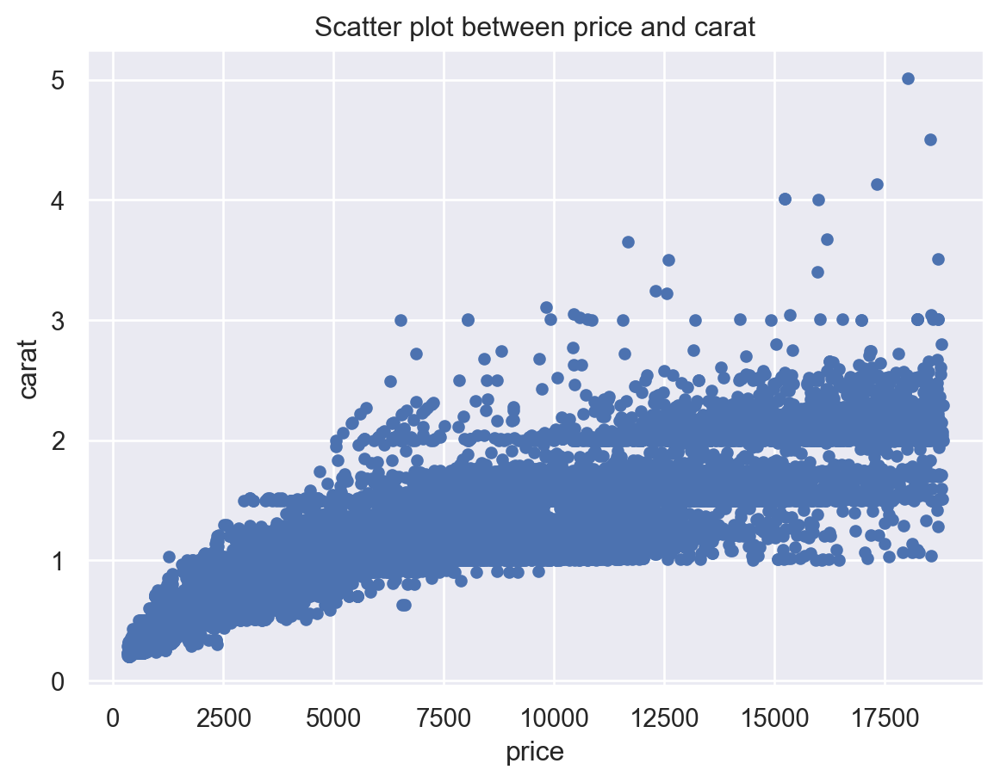

Predicting Continuous Variables using Regression Analysis - Linear and Non-Linear Regression
Linear Regression
Non-Linear Regression
Author
Sai Sundeep Rayidi
Published
December 5, 2023
In this blogpost we will be getting to know some important and widely utilized machine learning models for estimating continuous variables - Regression analysis. Regression analysis can be used to estimate the value of one variable using the known values of other variables and predict results and shifts in a variable based on its relationship with other variables. For instance, regression analysis can be used to predict the sales of a product based on its price, advertising, and other factors. We will be learning the following concepts in this blog -
Analyzing the Diamonds Dataset
Linear Regression and Normal Equation
Modeling non-linear relationships using Random Forests
1. Analyzing the Diamonds Dataset
Let us start by importing some packages and loading the Diamonds dataset available in the Seaborn visualization package. We can get the high level overview of the dataset by exploring it using the shape argument and describe method. We can see the first few records calling the head method on the diamonds dataframe.
#Import Packagesimport pandas as pdimport numpy as npimport matplotlib.pyplot as pltfrom sklearn.preprocessing import StandardScalerimport seaborn as snsimport warningswarnings.filterwarnings("ignore", category=FutureWarning)warnings.filterwarnings("ignore", category=UserWarning)sns.set_theme(style="darkgrid")diamonds = sns.load_dataset('diamonds')print(f"Number of Observations: {diamonds.shape[0]}")print(f"Number of Features: {diamonds.shape[1]}")print(f"\nSummary Statistics of numerical features:\n{diamonds.describe()}")print(f"\nFew Sample Records: \n{diamonds.head(10)}")
Number of Observations: 53940
Number of Features: 10
Summary Statistics of numerical features:
carat depth table price x \
count 53940.000000 53940.000000 53940.000000 53940.000000 53940.000000
mean 0.797940 61.749405 57.457184 3932.799722 5.731157
std 0.474011 1.432621 2.234491 3989.439738 1.121761
min 0.200000 43.000000 43.000000 326.000000 0.000000
25% 0.400000 61.000000 56.000000 950.000000 4.710000
50% 0.700000 61.800000 57.000000 2401.000000 5.700000
75% 1.040000 62.500000 59.000000 5324.250000 6.540000
max 5.010000 79.000000 95.000000 18823.000000 10.740000
y z
count 53940.000000 53940.000000
mean 5.734526 3.538734
std 1.142135 0.705699
min 0.000000 0.000000
25% 4.720000 2.910000
50% 5.710000 3.530000
75% 6.540000 4.040000
max 58.900000 31.800000
Few Sample Records:
carat cut color clarity depth table price x y z
0 0.23 Ideal E SI2 61.5 55.0 326 3.95 3.98 2.43
1 0.21 Premium E SI1 59.8 61.0 326 3.89 3.84 2.31
2 0.23 Good E VS1 56.9 65.0 327 4.05 4.07 2.31
3 0.29 Premium I VS2 62.4 58.0 334 4.20 4.23 2.63
4 0.31 Good J SI2 63.3 58.0 335 4.34 4.35 2.75
5 0.24 Very Good J VVS2 62.8 57.0 336 3.94 3.96 2.48
6 0.24 Very Good I VVS1 62.3 57.0 336 3.95 3.98 2.47
7 0.26 Very Good H SI1 61.9 55.0 337 4.07 4.11 2.53
8 0.22 Fair E VS2 65.1 61.0 337 3.87 3.78 2.49
9 0.23 Very Good H VS1 59.4 61.0 338 4.00 4.05 2.39
Let us now explore the unique values in the ‘cut’, ‘clarity’, and ‘color’ features of the diamonds dataset, along with the unique number of observations in each class.
print(“clarity types and count of diamonds of each clarity type:”) print(diamonds[‘clarity’].value_counts(ascending=False)) print(“colors and count of diamonds of each color:”) print(diamonds[‘color’].value_counts(ascending=False)) print(“cut types and count of diamonds in each cut type:”) print(diamonds[‘cut’].value_counts(ascending=False))
There are eight different clarity types, seven different unique colors and five different cut types. It appears the sale of Ideal cut type is highest, with 21,551 diamonds sold. The highest sold clarity diamond is of type 13065, and color is 11,292.
We will try to predict the price of the diamonds given the other independent variables like its weight (carat), color, cut, clarity, and other dimensions. So, let us see what is the correlation between the response variable price and other predictor variables.
corr_matrix = diamonds.select_dtypes(np.number).corr()print("Correlation between price and other features: \n")print(corr_matrix['price'].sort_values(ascending=False))
Correlation between price and other features:
price 1.000000
carat 0.921591
x 0.884435
y 0.865421
z 0.861249
table 0.127134
depth -0.010647
Name: price, dtype: float64
It appears that price is most correlated to carat variable, followed by other dimensions x, y, and z. Let us visualize the scatter matrix of the features in our dataset as well as a scatter plot between carat and price to see how the relationship between the features looks graphically.
plt.figure(figsize=(8, 8))diamonds.plot(kind="scatter", x="price", y="carat", grid=True)plt.title("Scatter plot between price and carat")plt.show()
<Figure size 768x768 with 0 Axes>

2. Linear Regression and the Normal Equation
A linear regression model makes a prediction by calculating the weighted sum of the input features and a constant term called bias term. To put it formally, give a dataset of n observations denoted by \({\{y_{i},\,x_{i1},\ldots ,x_{ip}\}_{i=1}^{n}\) the linear regression model assumes that the relationship between the dependent variable y (also called a regressand or response variable) and the independent variables (also called regressors or predictor variables) is linear. Thus the simple linear regression model takes the form -
Where, \(\epsilon\) is the error term or noise term which is there to explain the influence of all other factors other than regressors \(x\). \(\beta_{j}\) is the jth model parameter, also called the feature weights
To train a regression model that can predict y values given x. We will need to find the values of \(\beta\) that minimize the root mean squared error (MSE).
By putting in the dependent and independent variables and finding the gradient of this function, one can arrive at the equation of best parameters, by setting the gradient to zero -
Using Scikit Learn we can perform all these steps simply by calling the LinearRegression class with the predictor and response variables. However, we first need to encode our various categorical and numerical features. Lest us first build a pre-processing pipeline to do the same.
We have built our pre-processing pipeline that will take care of both numerical and categorical features in our dataset. It will impute any missing values in the numerical columns and scale the features using StandardScaler(). In the case of categorical features, it will encode each unique value in carat, color, and cut to a numerical value. Let us now split the dataset into a train and test set for training and validation steps and train a linear regression model
In a Jupyter environment, please rerun this cell to show the HTML representation or trust the notebook. On GitHub, the HTML representation is unable to render, please try loading this page with nbviewer.org.
We can make now make predictions using this trained model on our test samples. We can also visualize the coefficients (weights/parmaeters) of the features using the coef_ argument of the model.
diamonds_price_predictions = lin_reg.predict(diamonds_features_test)print(f"Weights/Coefficients of predictors:\n{lin_reg[1].coef_}")
We can see the performance of our model using these predictions and actual response variable values. The mean_squared_error and r2_score (also called coefficient of determination) tells us how well the model has performed on the test set. The R2 score provides the information about the goodness of fit of a model, that is, how well a regression line approximates the actual data.
from sklearn.metrics import mean_squared_error, r2_scoreprint("Mean Squared Error: %.2f"% mean_squared_error(diamonds_price_test, diamonds_price_predictions))print("Coefficient of Determination: %.2f"% r2_score(diamonds_price_test, diamonds_price_predictions))
Mean Squared Error: 1285799.99
Coefficient of Determination: 0.92
As we can see from above, the linear regression model we trained is able to account for 92% of the variance that’s explained by the independent variables in our dataset. Which is good, but let us see how we can take that value up while also minimizing the mean squared error using non-linear regression technique like Random Forest Regressor.
3. Random Forests
Random Forest is an ensemble learning technique. Instead of training a single regressor or classifier, we will train an ensemble of models and choose the prediction that is averaged over all the models. The method used to train this ensemble model is called bagging, short for bootstrap aggregating. In bagging a single algorithm is chosen as the algorithm that all the models will use but each model will train on a random subset (with replacement) of the overall dataset. Once all the predictors are trained, the ensemble can make the prediction for an instance by simply aggregating the predictions of all the predictors. For regression problems, the aggregation function is usually average. The advantage of such a process is that its decision is based on multiple models rather than a single model - so its calculations are reliable and more accurate than individual predictor. Additionally, the ensemble has lower variance than a single predictor.
Let us train a Random Forest Regressor to predict the diamonds price.
from sklearn.ensemble import RandomForestRegressorrfr_reg = make_pipeline(preprocessor, RandomForestRegressor())rfr_reg.fit(diamonds_features_train, diamonds_price_train)
In a Jupyter environment, please rerun this cell to show the HTML representation or trust the notebook. On GitHub, the HTML representation is unable to render, please try loading this page with nbviewer.org.
Now that we trained the RandomForestRegressor, let us make predictions using it and evaluate its performance by calculating mean squared error and r2_score.
Mean Squared Error: 306066.73
Coefficient of Determination: 0.98
Great! the random forest regressor is able to approximate the actual data much better than the linear regression model we built earlier. Also, the mean squared error is reduced by huge margin. Random Forest is more flexible than linear regression which tries to fit a line to the data while a non-linear regression technique like Decision Trees and Random Forests uses a curve to show association.